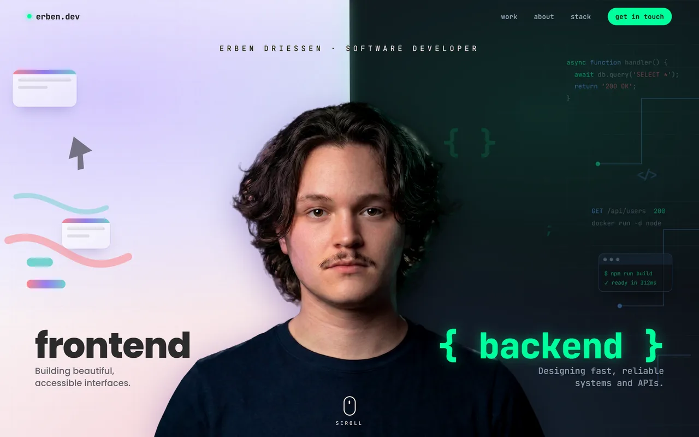
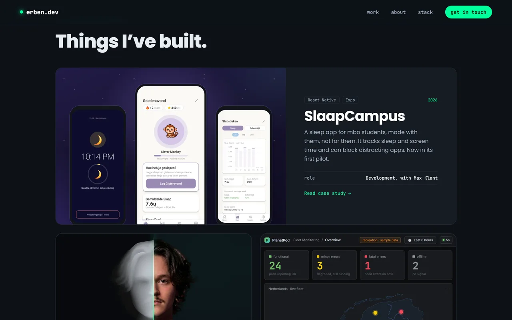
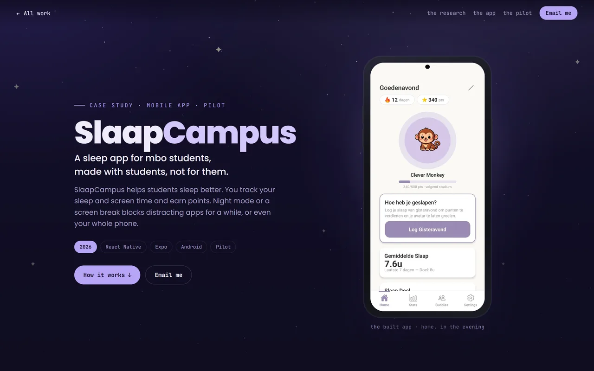
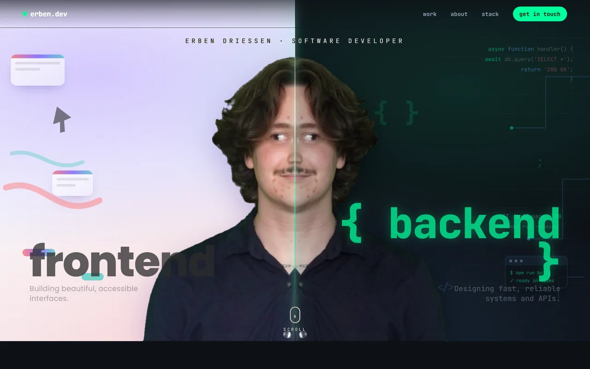
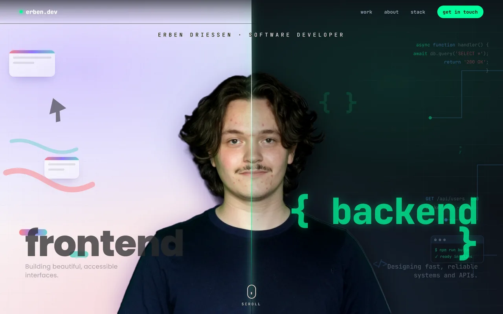
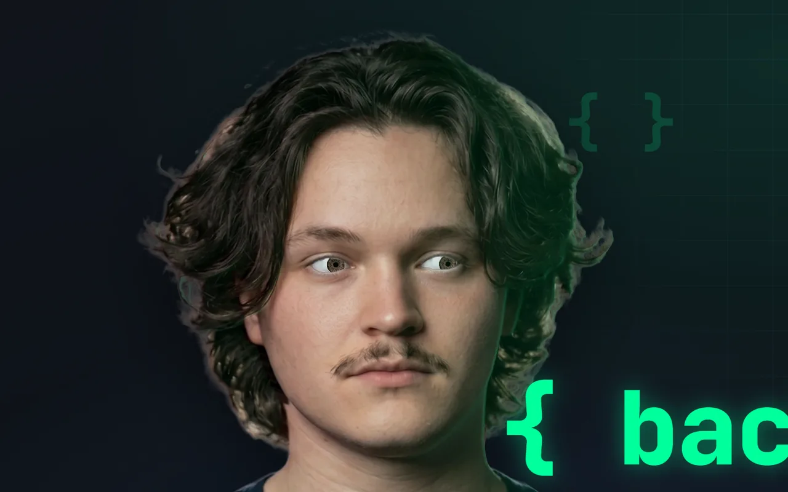
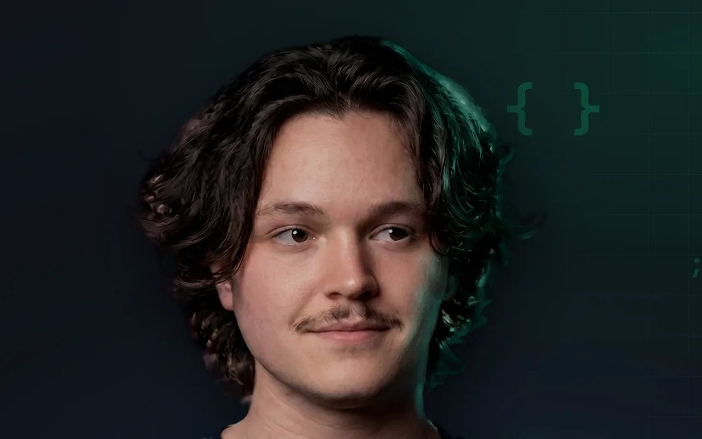

Case study · Web
This website
One photo of me, turned into a face that looks back.
The portrait on my homepage is live. It’s built from one studio photo. It turns toward your cursor, blinks, and smiles a little when it looks over at frontend or backend.

- 1 photo
- no 3D scan, no video
- 3 photo edits
- back plate, blink, smile
- ~430 KB
- every image the face loads on a phone
- 0 frameworks
- plain JS and WebGL
How it’s made
Five steps from one photo.
-

01 Photo
One studio shot, cut out from the background.
-

02 Depth
Depth Anything V2 guesses how far every pixel is from the camera. I ran it on my own GPU and mirrored the face’s depth so both cheeks turn the same way.
-

03 Layers
My loose hair is its own layer, so it slides over my neck when I turn instead of smearing. Under it sits an edited photo of me with the hair tucked away.
-

04 Eyes
The eyes are cut out and rebuilt from my own iris, so they can actually follow you.
-

05 Blink and smile
Two more edits of the same photo. My eyelids and the corners of my mouth move along a flow field, so nothing just fades in.
Two sides, one light
Each side lights me.


The signature
It signs itself.
Scroll down on the homepage and the banner steps back like a card on a desk. Then my ED gets written with a pen, stroke by stroke. E first, then the D in one long sweep. The pen follows the centerline of my signature.

The way in and the way between
You don't see it half-built.
Two animations with one job. They cover the page while it loads, then get out of the way.

The ED loader
When you open the homepage, it first writes the ED from my favicon, stroke by stroke: first the E, then the D. It waits until the live portrait is ready, for two seconds at most. Then the letters become a window onto the page and zoom open until one stroke fills the screen.
Every time you open or refresh the homepage at the top. A click, a key or a scroll hurries it along.


The curtain
Click a project and a panel in its colour slides up over the page, with its name on it. The next page starts under that same panel, before it has drawn anything, and lifts it away once the first screen has loaded.
Going back to all work gets one too. With reduced motion turned on, neither plays.
Light on a phone
Cheap enough for a train.
A live face is easy on a desktop. On a phone it has to be cheap. A recruiter might open this on a train, on their phone.
- textures
- ~23 MB of GPU memory, not 62
- download
- ~430 KB of images, not 730
- drawing
- only when something moves
- scrolled past
- it stops
Windows display scaling (125% and 150%) needed its own fix to keep the face sharp.

How far it has come
It started as two photos.
The idea was there from the first version: me split down the middle, frontend on one side and backend on the other. What changed is the face.
-

The first version
Two still photos of me, one for each side, and a seam between them that followed your cursor.
-
Until

The one before this
Newer photos, plus a third one looking straight at you until your cursor picked a side.
-
In between

A first try at depth
One photo on a depth map, with one iris image moved around in both eyes. When the head turned, the eyes stared. It looked creepy and never went live. It’s why the face now has its own eyes and layers.
-
Now

This one
A live portrait with its own eyes, an ED that writes itself while the page loads, and a curtain between pages.
Built with
- HTML
- CSS
- JavaScript
- WebGL (GLSL)
- GSAP
- Lenis
- SVG
- Supabase
Tools
- Depth Anything V2
- Gemini image edits
What I learned
The AI tools gave me raw material, a depth map and three edited photos. Most of the work came after that. Lining the edits up with the original, making the eyes behave and keeping it smooth on a phone.